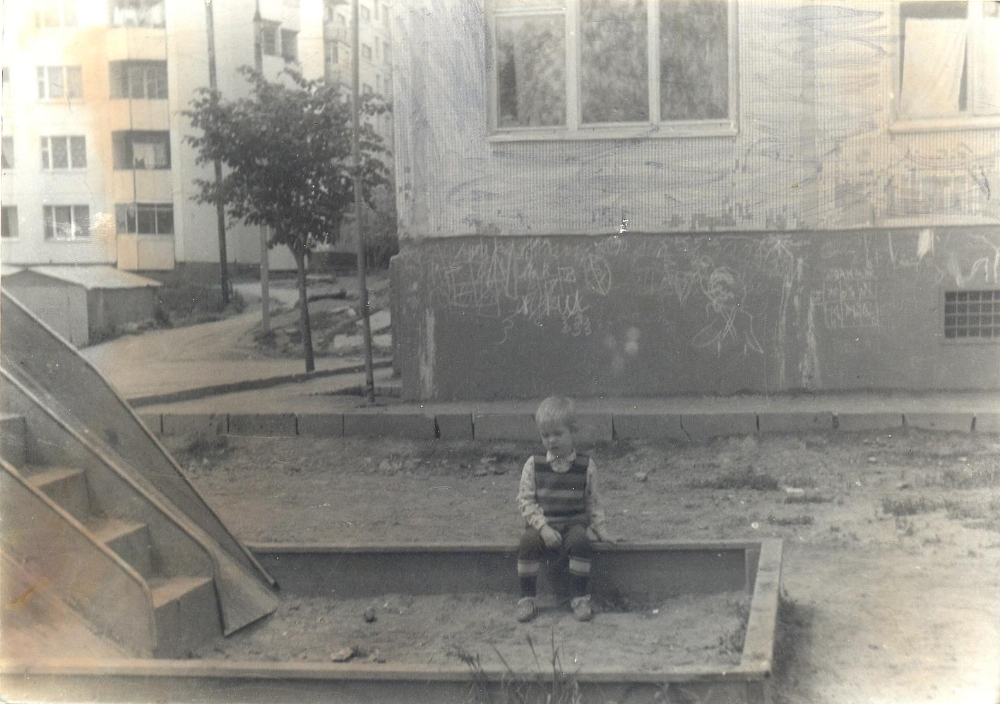
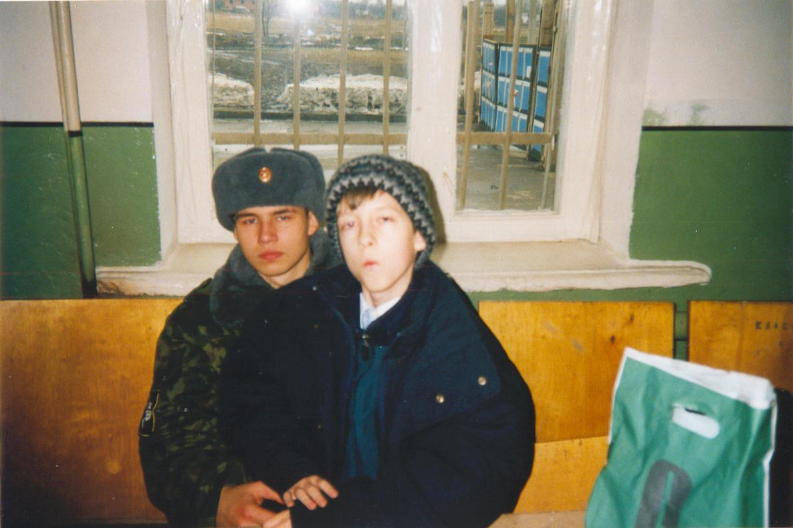

...Вообще-то, писать свою собственную биографию я начал ещё лет 6 назад. Тогда это было мотивировано тем, чтобы сохранить как можно больше воспоминаний о своём детстве, о значимых и не очень значимых моментах жизни, которые во многом формировали мои вкусы, мировоззрение и т. д. Но главным было именно зафиксировать всё, что я помню и боюсь забыть. Так и появилась недописанная до сих пор книга «Мои 90-ые», содержащая подробный пересказ событий 1992-1997 годов. Но книга эта, даже если она будет дописана, не предназначена для широкой аудитории, так как пишется для меня одного. Однако, не хотелось бы, чтобы у тех, кто интересуется моим творчеством и мной самим, возник информационный вакуум или неверные представления. Поэтому, наверное, будет полезно рассказать о себе несколько более развёрнуто, чем три скупых абзаца в описании группы «Кинамания» Вконтакте. :)
Начну с того, что родился я в городе Ростове-на-Дону, где и живу по сей день. Было это 31 марта 1988 года ранним утром. До сих люблю эту дату не столько потому что это мой день рождения, а потому что это было наиболее удачное время для моего появления на свет. Мне кажется, что многие мои взгляды на вещи, которые появились у меня уже в более-менее сознательном возрасте, во многом отражают именно 88-й год, конец 80-ых, воздух, музыку той эпохи, словно это у меня в крови. Ну это я так, разогреваю мысли ))
Аутентично детская чёрно-белая фотография. Грустью и поиском смысла преисполнено моё юношеское лицо. Ростов-на-Дону, 1991 год.
Я не был первенцем у моих родителей — им был мой брат Виталик, который старше меня на 8 лет. В первые 8-9 лет моей жизни мы с ним не шибко ладили, что вполне можно понять. Донимал я его знатно в те времена :) Но с момента как он вернулся из армии, мы стали очень близки. В общем, жили мы в однокомнатной квартире на Северном. Рос я достаточно активным, но весьма плаксивым ребёнком. Часто плакал по пустякам и обижался на Виталика, когда тот специально коверкал моё имя, передразнивая моё собственное произношение :) В детский сад я не ходил — его мне заменял брательник: каждое утро мы вставали вместе, завтракали, родители были на работе; мама работала в первую смену на заводе, а Веталь учился во вторую, поэтому приходила она с работы как раз перед уходом Веталя в школу. Года до 95-го так продолжалось, ибо в 95-м пошёл в школу уже я. На тот момент моими основными увлечениями стали мультсериалы вроде «Черепашек-Ниндзя» и «Чипа и Дейла», коллекционирование наклеек из жевательной резинки «Терминатор» (коими в 90-ые была просто завалена наша страна), ну и, разумеется, игры с друзьями во всё и везде. С той поры, кстати, имею один-единственный шрам на теле — лет в 5 навернулся с качели и рассёк бровь над правым глазом. Повезло, могло закончиться хуже.
Брат Веталь, только что ставший настоящим мужчиной. И я, ещё пока им не ставший. Ростов-на-Дону, 2001 год.
Каждые выходные мы исправно ездили в деревню к моей бабушке по маминой линии в село Самбек. Там во все времена года было просто обалденно. Единственное — не особо много у меня там было друзей, поскольку большинство детей в семьях нашей округи были несколько старше меня — больше под стать моему брату. Были два хороших парнишки — братья Денис и Андрей, которые приезжали в деревню к своим родственникам, так же как и я, на выходные и на лето. И когда мы пересекались там — вместе тусовались постоянно. А вот летом 95-го в Самбек с Сахалина приехала их сестра Ира (практически моя ровесница) с семьёй, и осталась здесь жить. С ней мы сдружились очень быстро и дружим до сих пор — именно у неё я впервые активно играл в Сегу и смотрел мультики на видеомагнитофоне, которого не было больше ни у кого из моих друзей.